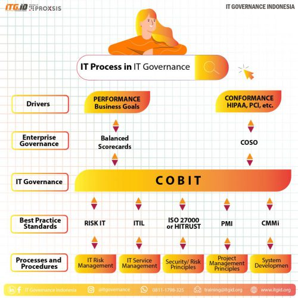

Ringkasan IT Governance Secara Umum
IT Governance adalah proses pengelolaan dan pengendalian teknologi informasi (TI) dalam organisasi yang bertujuan untuk meningkatkan kinerja TI dan memastikan bahwa TI memenuhi standar industri serta kebutuhan bisnis organisasi. IT Governance memastikan bahwa TI digunakan dengan efektif dan efisien, serta mengelola risiko TI dan meningkatkan kualitas layanan TI.

IT Governance mencakup berbagai aspek pengelolaan TI, seperti perencanaan, implementasi, pengoperasian, pemantauan, dan pengendalian TI. IT Governance juga mencakup pengelolaan layanan TI, termasuk desain, transisi, operasi, dan peningkatan layanan.
IT Governance digunakan oleh organisasi di berbagai industri dan digunakan untuk meningkatkan pengelolaan TI dalam organisasi. Beberapa framework IT Governance yang populer digunakan oleh organisasi adalah COBIT, ITIL, dan ISO 20000.
Secara umum, IT Governance memastikan bahwa TI digunakan dengan efektif dan efisien, serta memastikan bahwa TI memenuhi standar industri dan kebutuhan bisnis organisasi. IT Governance juga memastikan bahwa risiko TI dikelola dengan baik dan kualitas layanan TI ditingkatkan.
Penjelasan Masing Masing Framework
COBIT
COBIT (Control Objectives for Information and related Technology) adalah framework IT Governance yang digunakan untuk mengatur dan mengendalikan teknologi informasi (TI) dalam organisasi. Framework ini dikembangkan oleh ISACA (Information Systems Audit and Control Association) dan pertama kali diperkenalkan pada tahun 1996. COBIT menyediakan panduan yang berguna bagi organisasi dalam mengelola TI dengan cara yang efektif dan efisien, serta memastikan bahwa TI memenuhi standar industri dan meningkatkan kinerja perusahaan.
COBIT mengadopsi pendekatan proses yang menyediakan panduan untuk mengelola TI dengan cara yang efektif dan efisien. Framework ini menyediakan cara untuk mengukur kinerja TI dan mengevaluasi tingkat kesesuaian dengan standar industri. COBIT memiliki ruang lingkup yang luas dan mencakup semua aspek dari pengelolaan TI, termasuk perencanaan, implementasi, pengoperasian, pemantauan, dan pengendalian TI.
COBIT memiliki 5 proses utama yang mencakup perencanaan dan organisasi, aquisition dan implementasi, pengoperasian dan pemeliharaan, pemantauan dan evaluasi, serta pengendalian dan pengelolaan. Framework ini juga menyediakan panduan yang berguna bagi organisasi dalam mengelola risiko TI dan meningkatkan kinerja TI.
COBIT diakui sebagai standar industri dalam IT Governance dan digunakan oleh banyak organisasi di seluruh dunia. Framework ini sering digunakan bersama dengan standar lain seperti ISO 27001 dan ITIL untuk meningkatkan pengelolaan TI dalam organisasi.
ITIL
ITIL (Information Technology Infrastructure Library) adalah framework yang digunakan untuk mengelola layanan TI dalam organisasi. ITIL dikembangkan oleh UK Government's Central Computer and Telecommunications Agency (CCTA) pada tahun 1980-an dan saat ini diakui sebagai standar industri dalam pengelolaan layanan TI.
ITIL mengadopsi pendekatan layanan yang menyediakan panduan untuk mengelola layanan TI dengan cara yang efektif dan efisien. Framework ini memiliki 5 proses utama yang mencakup strategi layanan, desain layanan, transisi layanan, operasi layanan dan peningkatan layanan. ITIL juga memberikan panduan untuk mengelola risiko layanan TI dan meningkatkan kualitas layanan TI.
ITIL memiliki ruang lingkup yang fokus pada pengelolaan layanan TI, termasuk desain, transisi, operasi, dan peningkatan layanan. ITIL digunakan oleh banyak organisasi di seluruh dunia dan sering digunakan bersama dengan standar lain seperti COBIT dan ISO 20000 untuk meningkatkan pengelolaan layanan TI dalam organisasi.
ISO 20000
ISO 20000 adalah standar internasional untuk pengelolaan layanan TI. Standar ini dikeluarkan oleh ISO (International Organization for Standardization) dan memberikan panduan tentang cara mengelola layanan TI secara efektif dan efisien. Standar ini terdiri dari dua bagian, yaitu ISO 20000-1 dan ISO 20000-2.
ISO 20000-1 memberikan persyaratan untuk sistem manajemen layanan TI dan mencakup prinsip-prinsip pengelolaan layanan TI seperti perencanaan, implementasi, operasi, pemantauan, evaluasi, peningkatan dan pengendalian layanan TI. Sedangkan ISO 20000-2 memberikan panduan tentang bagaimana mengaplikasikan persyaratan ISO 20000-1 dalam organisasi.
Standar ini ditujukan untuk digunakan oleh semua jenis organisasi yang menyediakan layanan TI, termasuk organisasi yang menyediakan layanan internal maupun eksternal. ISO 20000 dapat digunakan sebagai dasar untuk sertifikasi dan diakui sebagai standar internasional dalam pengelolaan layanan TI.
Standar ini kerap digunakan bersama dengan ITIL dan COBIT untuk meningkatkan pengelolaan layanan TI dalam organisasi. Dengan mengimplementasikan ISO 20000, organisasi dapat meningkatkan kualitas layanan TI, mengurangi biaya dan meningkatkan kepuasan pelanggan.
Perbandingan
COBIT (Control Objectives for Information and related Technology), ITIL (Information Technology Infrastructure Library), dan ISO 20000 adalah tiga framework yang digunakan dalam IT Governance. Namun, keduanya memiliki definisi, ruang lingkup, pendekatan, dan tujuan yang berbeda.
1. Defenisi :
- COBIT adalah framework IT Governance yang digunakan untuk mengatur dan mengendalikan teknologi informasi (TI) dalam organisasi.
- ITIL adalah framework yang digunakan untuk mengelola layanan TI dalam organisasi.
- ISO 20000 adalah standar internasional untuk pengelolaan layanan TI yang menyediakan persyaratan dan panduan untuk mengelola layanan TI secara efektif dan efisien.
2. Ruang lingkup :
- COBIT memiliki ruang lingkup yang luas dan mencakup semua aspek dari pengelolaan TI, termasuk perencanaan, implementasi, pengoperasian, pemantauan, dan pengendalian TI.
- ITIL fokus pada pengelolaan layanan TI, termasuk desain, transisi, operasi, dan peningkatan layanan.
- ISO 20000 fokus pada pengelolaan layanan TI, termasuk perencanaan, implementasi, operasi, pemantauan, evaluasi, peningkatan, dan pengendalian layanan TI.
3. Pendekatan:
- COBIT mengadopsi pendekatan proses yang menyediakan panduan untuk mengelola TI dengan cara yang efektif dan efisien.
- ITIL mengadopsi pendekatan layanan yang menyediakan panduan untuk mengelola layanan TI dengan cara yang efektif dan efisien.
- ISO 20000 mengadopsi pendekatan sistem manajemen yang menyediakan persyaratan dan panduan untuk mengelola layanan TI secara efektif dan efisien.
4. Tujuan:
- Tujuan dari COBIT adalah untuk memberikan panduan yang berguna bagi organisasi dalam mengelola TI dengan cara yang efektif dan efisien, serta memastikan bahwa TI memenuhi standar industri dan meningkatkan kinerja perusahaan.
- Tujuan dari ITIL adalah untuk memastikan bahwa layanan TI diterima dengan baik oleh pengguna akhir dan dikelola dengan cara yang efektif dan efisien, serta meningkatkan kualitas layanan TI dan mengurangi biaya.
- Tujuan dari ISO 20000 adalah untuk memberikan persyaratan dan panduan untuk mengelola layanan TI secara efektif dan efisien, serta meningkatkan kualitas layanan TI dan meningkatkan kepuasan pelanggan.
Kesimpulan Perbandingan
Secara umum, ketiga framework ini memiliki tujuan yang sama yaitu untuk meningkatkan pengelolaan TI dalam organisasi dan memastikan bahwa layanan TI diterima dengan baik oleh pengguna akhir. Namun, COBIT lebih menekankan pada pengendalian dan pengelolaan TI dalam organisasi, ITIL lebih menekankan pada pengelolaan layanan TI, dan ISO 20000 lebih menekankan pada persyaratan dan panduan untuk mengelola layanan TI secara efektif dan efisien.
Contoh Implementasi IT Governance
Ada beberapa contoh implementasi IT Governance dalam organisasi, di antaranya:
- Menggunakan COBIT untuk mengelola risiko TI dan meningkatkan kinerja TI: Organisasi dapat menggunakan COBIT untuk mengidentifikasi dan mengelola risiko TI, serta mengukur kinerja TI dan mengevaluasi tingkat kesesuaian dengan standar industri.
- Menggunakan ITIL untuk meningkatkan kualitas layanan TI: Organisasi dapat menggunakan ITIL untuk mengelola layanan TI secara efektif dan efisien, serta meningkatkan kualitas layanan TI dan mengurangi biaya.
- Menggunakan ISO 20000 untuk mengelola layanan TI secara efektif dan efisien: Organisasi dapat menggunakan ISO 20000 untuk mengelola layanan TI secara efektif dan efisien, serta meningkatkan kualitas layanan TI dan meningkatkan kepuasan pelanggan.
- Menggunakan COBIT, ITIL, dan ISO 20000 secara bersamaan: Organisasi dapat menggunakan COBIT, ITIL, dan ISO 20000 secara bersamaan untuk meningkatkan pengelolaan TI dalam organisasi dan memastikan bahwa layanan TI diterima dengan baik oleh pengguna akhir.
- Membuat tim IT Governance: Organisasi dapat membuat tim IT Governance yang bertanggung jawab untuk mengelola TI dan layanan TI dalam organisasi dan memastikan bahwa TI memenuhi standar industri dan meningkatkan kinerja perusahaan.
- Membuat pola pengelolaan TI: Organisasi dapat membuat pola pengelolaan TI yang mencakup prosedur, standar, dan panduan untuk mengelola TI dan layanan TI dalam organisasi dan memastikan bahwa TI memenuhi standar industri dan meningkatkan kinerja perusahaan.